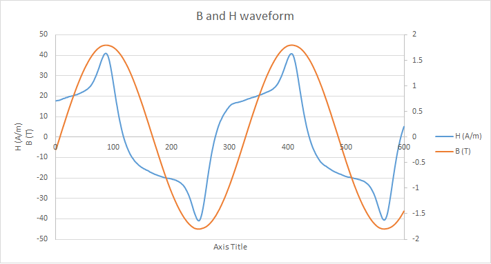

Epstein tester is a device use to characterize magnetic materials by studying its B-H loop characteristics. Currently, the hardware available in lab requires an oscilloscope to plot the B-H loop and fetch the data to an external system. This makes the overall setup bulky and uneconomical. This project aims to provide a built-in module for the setup to distend its features by suppressing the requirement of large no. of external components.
The data acquisition hardware was built using an external ADC, viz. AD7768, offering 24 bit resolution at the maximum rate of 256000 samples per second. DE0 Nano FPGA board was used for fetching the data from ADC and transferring it to PC using UART protocol.
Data acquisition system for Epstein tester
Block diagram

Block diagram
Results

B, H waveform at 49 Hz in time domain (15620 samples per second)

B-H loop at 49 Hz (15620 samples per second)
Slight non-overlapping regions for multiple cycle results from external noise in the circuit.